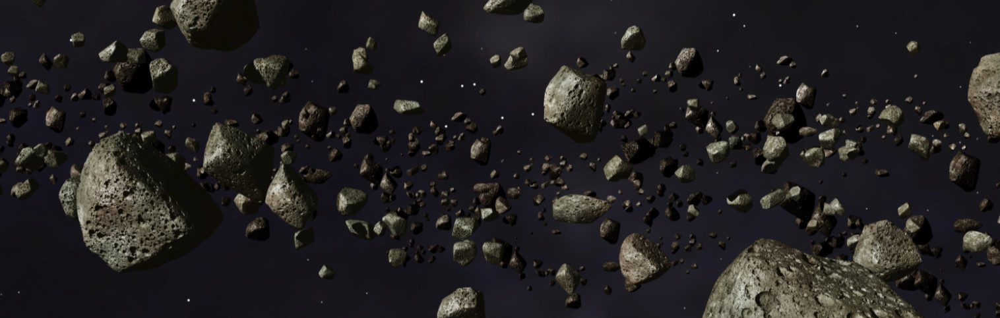

El sistema solar
¿Que sabemos sobre esto?

El sistema solar es el sistema planetario que liga gravitacionalmente a un conjunto de objetos astronómicos que giran directa o indirectamente en una órbita alrededor de una única estrella conocida con el nombre de Sol.
La estrella concentra el 99,86 % de la masa del sistema solar, y la mayor parte de la masa restante se concentra en ocho planetas cuyas órbitas son prácticamente circulares y transitan dentro de un disco casi llano llamado plano eclíptico. Los cuatro planetas más cercanos, considerablemente más pequeños, Mercurio, Venus, Tierra y Marte, también conocidos como los planetas terrestres, están compuestos principalmente por roca y metal. Mientras que los cuatro más alejados, denominados gigantes gaseosos o «planetas jovianos», más masivos que los terrestres, están compuestos de hielo y gases. Los dos más grandes, Júpiter y Saturno, están compuestos principalmente de helio e hidrógeno. Urano y Neptuno, denominados gigantes helados, están formados mayoritariamente por agua congelada, amoniaco y metano.
Detalles extra
Adicionalmente a los miles de objetos pequeños de estas dos zonas, algunas docenas de los cuales son candidatos a planetas enanos, existen otros grupos como cometas, centauros y polvo cósmico que viajan libremente entre regiones. Seis planetas y cuatro planetas enanos poseen satélites naturales. El viento solar, un flujo de plasma del Sol, crea una burbuja de viento estelar en el medio interestelar conocido como heliosfera, la que se extiende hasta el borde del disco disperso. La nube de Oort, la cual se cree que es la fuente de los cometas de período largo, es el límite del sistema solar y su borde está ubicado a un año luz desde el Sol.
A principios del año 2016, se publicó un estudio según el cual puede existir un noveno planeta en el sistema solar, al que dieron el nombre provisional de Phattie. Se estima que el tamaño de Phattie sería entre el de Neptuno y la Tierra y que el hipotético planeta sería de composición gaseosa.
